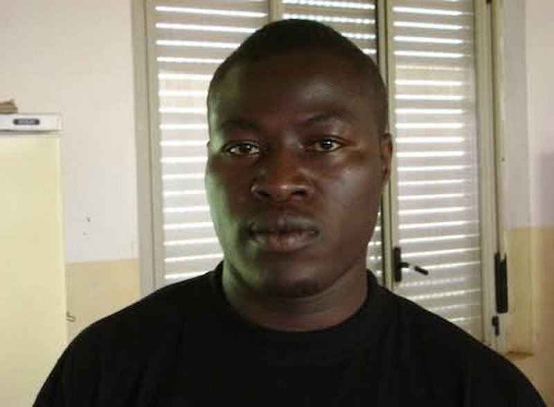

Timothy Ebil | WDD 130

Hello! I am from Oyam District, Northern Uganda. I enjoy building houses and traveling. I am currently studying Web Design and Development at BYU pathway. I am excited to learn more about web development and design. I am looking forward to creating my own website and learning more about the industry. I am happy to see what the future holds for me.